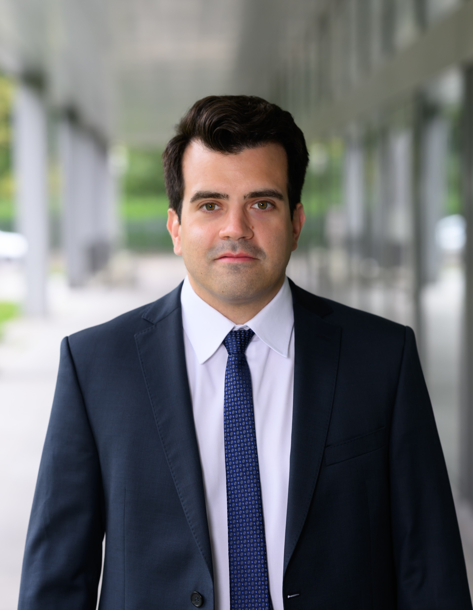

I. Grundlagen
Anlagen verstehen
Aktien, Obligationen, ETFs, Diversifikation, Risiken und Kosten — die Bausteine, die Sie brauchen, um Ihr Vermögen einzuordnen. Erklärt in klarer Sprache, nicht in Bankerdeutsch.
Sie stehen kurz vor der Pensionierung oder haben Ihr Kapital aus der 2. Säule bezogen? Ich vermittle Ihnen das Wissen, um Ihr Vermögen souverän, sicher und kostengünstig selbst zu verwalten.

Mein Name ist Manuel Känzig. Ich habe Quantitative Finance an der Universität Zürich und der ETH Zürich studiert und war zuletzt bei der AXA als Portfolio Manager verantwortlich für Pensionskassen-Portfolios mit einem Volumen von rund CHF 400 Millionen.
Durch meine Tätigkeit kenne ich die Kostenstrukturen der Vermögensverwaltung von innen — und weiss, wie gross der Unterschied zwischen institutionellen und privaten Konditionen sein kann. Genau dieses Wissen möchte ich an Personen weitergeben, die in ihre Pensionierung gehen.
Vier Bereiche, in denen ich Ihnen das Wissen vermittle, das sonst nur institutionellen Anlegern zur Verfügung steht. Verständlich erklärt, praxisnah und ohne Fachjargon.
Aktien, Obligationen, ETFs, Diversifikation, Risiken und Kosten — die Bausteine, die Sie brauchen, um Ihr Vermögen einzuordnen. Erklärt in klarer Sprache, nicht in Bankerdeutsch.
Vom Eröffnen eines Depots bis zur Auswahl passender Produkte: Wie Sie Schritt für Schritt souverän Ihr Kapital aus der 2. Säule selbst verwalten.
Vermögensverwaltungsmandate können mehrere Tausend Franken pro Jahr kosten. Lernen Sie, wie Sie Gebühren erkennen, vergleichen und langfristig deutlich reduzieren.
Ziel ist nicht die Abhängigkeit von einem Berater — sondern, dass Sie Ihre Finanzen verstehen und in jeder Marktphase ruhig und überlegt entscheiden können.
Hinweis: Es handelt sich ausschliesslich um Wissensvermittlung und nicht um Anlageberatung im Sinne der FINMA-Regulierung.
Nein. Ich vermittle ausschliesslich Wissen. Konkrete Anlageempfehlungen für Einzelpersonen gehören nicht zu meinem Angebot — und mein Angebot ist daher auch nicht FINMA-reguliert.
Insbesondere für Personen, die kurz vor oder nach dem Bezug ihres Kapitals aus der 2. Säule stehen und ihr Vermögen verstehen und selbstständig verwalten möchten — ohne hohe laufende Kosten.
M.Sc. in Quantitative Finance an der Universität Zürich und der ETH Zürich. Mehrere Jahre als Portfolio Manager bei der AXA mit Verantwortung für rund CHF 400 Mio. an Pensionskassen-Vermögen, davor Stationen bei Finreon AG und UBS.
Aktuell befinde ich mich im Aufbau eines strukturierten Studienprogramms. Für ein erstes, unverbindliches Gespräch nehmen Sie bitte direkt Kontakt mit mir auf — ich melde mich persönlich bei Ihnen.
Nein. Ich bin vollkommen unabhängig, erhalte keine Provisionen und vertreibe keine Produkte. Mein einziges Interesse ist, dass Sie Ihr Vermögen verstehen.
Schreiben Sie mir oder rufen Sie mich an. Ich nehme mir gerne Zeit für ein unverbindliches, persönliches Erstgespräch.
LinkedIn-Profil ansehen →